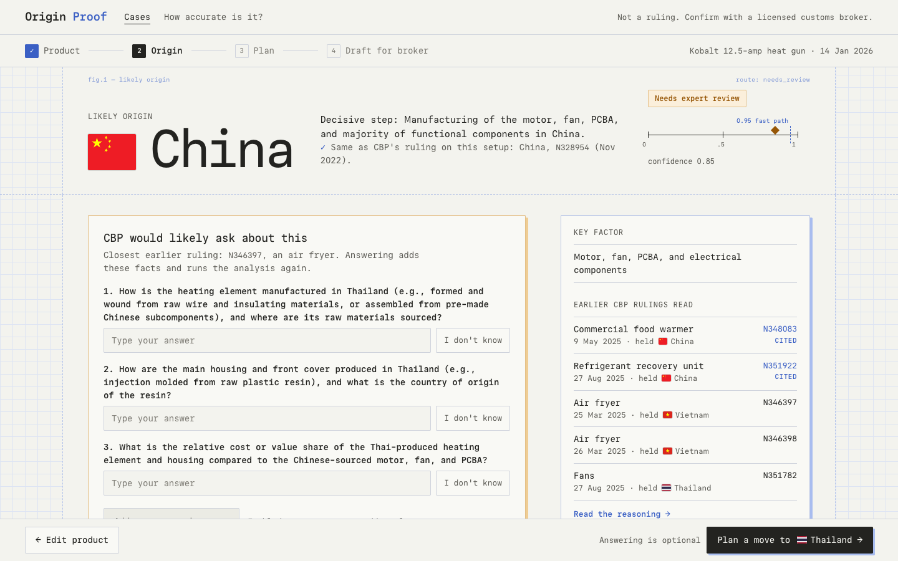
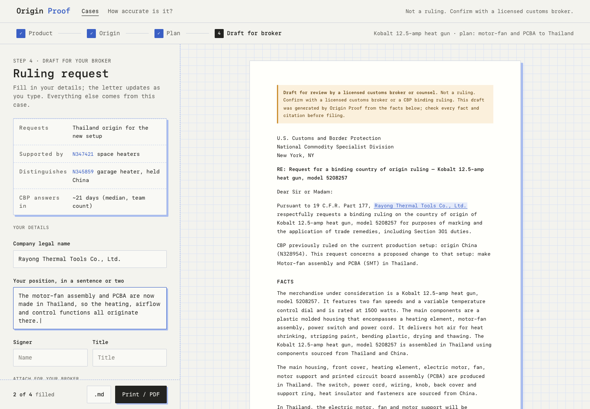
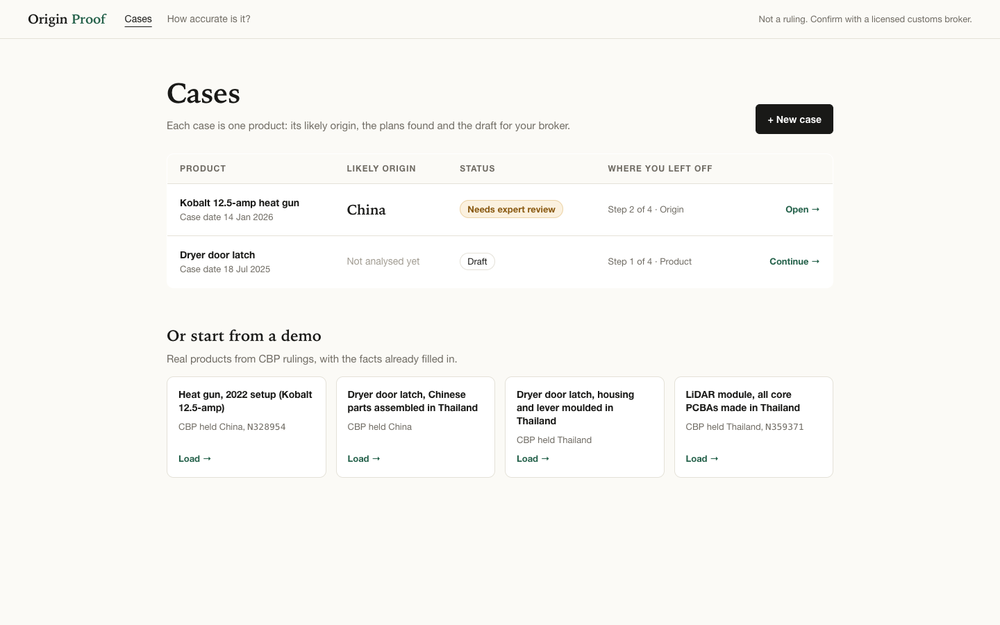
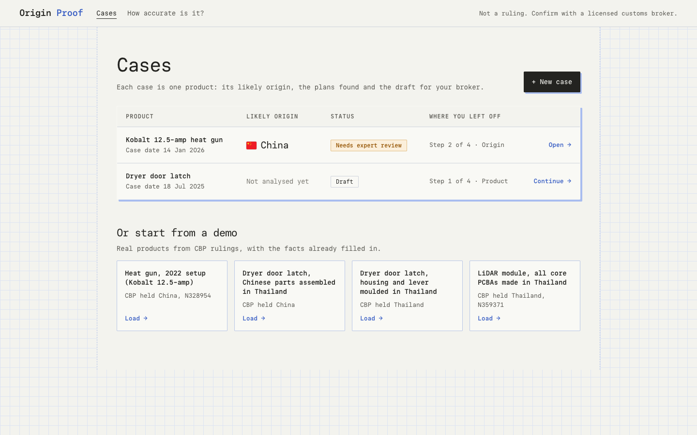

Result (key screen)


Your reference: Paper Mono's site, an open-source monospace (SIL OFL, built on Vercel's Geist Mono, v1.0 on 7 Oct 2026). P applies its look to the locked layouts: Paper Mono for all text, off-white paper on a blue graph grid, spec-dialog panels with hard blue offset shadows, dashed guides with small dimension labels ("fig.1 — likely origin"), and confidence as a ruler with the 0.95 fast-path line. Only the look changes; layouts and content are the same. All text passes WCAG AA, including over the grid lines (accent 4.6:1, amber 4.5:1).




